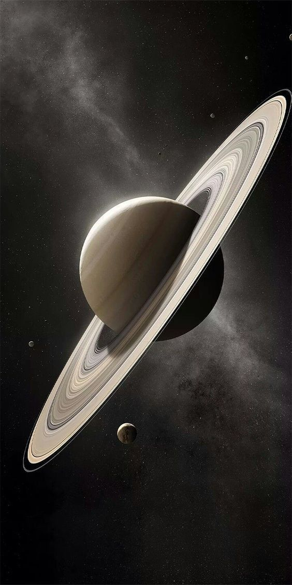

Saturn — Lord of the Rings
Quick Stats
Mean Radius: 58,232 km
Mass: 5.683 × 10²⁶ kg
Orbital Period: 29.45 Earth years
Rotation Period: ~10.7 hours
Axial Tilt: 26.7°
Distance: ~1.43B km from Sun
Atmosphere
- Composed mostly of hydrogen and helium
- Banding and long-lived storms, like the hexagon at the north pole
- Winds up to 1,800 km/h — among the fastest in the Solar System
Interior
- Small rocky core surrounded by metallic hydrogen
- Liquid hydrogen and helium layers
- Possibly rains helium deep inside
Rings & Moons
- Iconic rings made of ice particles and rocky debris
- Over 140 known moons — Titan is the largest, with a thick atmosphere
- Enceladus: Emits water-rich plumes, potential subsurface ocean
Exploration
- Pioneer 11, Voyager 1 & 2, Cassini-Huygens mission
- Cassini orbited Saturn for 13 years, ending in 2017 with a dramatic plunge
Fun Fact
Despite its size, Saturn is the least dense planet—it would float in water (if you could find a bathtub that big).